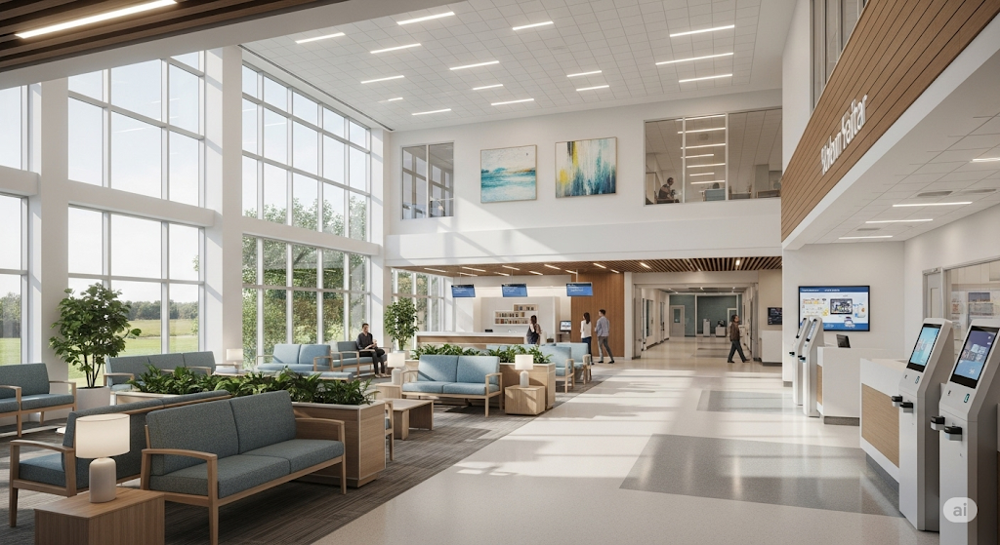

Unggulan
Pelayanan Sepenuh Hati
Profesional
Dokter Profesional & Ramah

Nyaman
Fasilitas Modern & Nyaman
Tentang Kami
Rumah Sehat Boyolali adalah pusat layanan kesehatan modern yang berkomitmen memberikan pelayanan medis terbaik untuk masyarakat Boyolali dan sekitarnya. Kami menyediakan berbagai layanan kesehatan mulai dari pemeriksaan umum, konsultasi dokter spesialis, hingga layanan penunjang medis lainnya.
Dokter Berpengalaman
Tim dokter profesional dan bersertifikat siap melayani Anda.
Fasilitas Modern
Dilengkapi alat medis canggih dan ruang perawatan nyaman.
Pelayanan Ramah
Staf kami siap membantu dengan sepenuh hati dan senyum.
Dengan tenaga medis profesional, fasilitas modern, dan pelayanan ramah, kami siap menjadi mitra kesehatan Anda dan keluarga.
Kepuasan dan kesehatan pasien adalah prioritas utama kami.